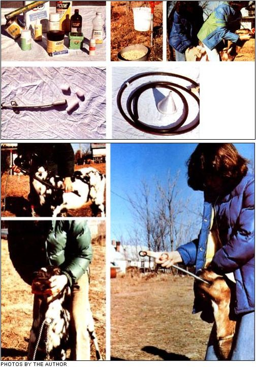

Kansas State University veterinarian Randy Kidd is back again . . . to tell you how to treat your own pets and barnyard critters with topical and oral medications.
The medicine man of yore painted his face (or donned a "medicinal" mask), jumped around, shook rattles, and generally scared the hell out of his patients. Strangely enough, that treatment often worked: Wherever that "hell" was scared to, the disease process went right along with it!
But today's "medicine men" tend to work their "miracles" in a somewhat different manner. These days, the trend is toward finding a specific medicine (or drug) to cure or at least attack-each separate disease. Of course, some folks see this emphasis on the use of drugs as a great medical advance ... while others view it as a serious danger.
Still-even though the use of medicines certainly isn't the only "cure" game in town it is the game we currently know the most about. There are many ways to treat any animal (including the human species), but most of our recent scientific research has been directed toward the development of more efficient drugs . . . and it seems prudent to take advantage of the products of this study. Naturally, the use of any treatment whether or not that treatment involves drugs should be tempered with care, common sense, and moderation.
(Remember, also, that medicines and drugs are-by definition-any substances or mixtures used to treat disease. Many of the things that fit this description-and are effective-can be grown at home or foraged in the wild . . . they don't all come only from the large pharmaceutical houses.)
In the end, however, how regularly you medicate your animals (and how much of the medicines you give 'em) will depend upon the way you use these substances upon yourself. If you gulp down aspirin at every hint of a headache, you'll likely medicate your critters for any ailment they happen to get. ,And, if you're the stoic type-who hasn't taken a pill for years-you'll probably expect most animal illnesses to cure themselves . . . as yours have.
There's more to the proper use of medicine than buying a bottle of pills at the feed store and giving one to a beast with the sniffles and two to a critter that coughs. The idea is to attack the disease process (the cough, infection, etc.) without harming the animal. Remember that no drug is 100% effective, and almost none of 'em will work if the patient isn't also given additional tender loving care. To recover, a beast needs a warm, draft-free room, and a better supply of food and water than a healthy critter. Some sick animals even have to be force-fed!
Very few medicines are specific in their actions. This means that you can't usually kill pneumonia bacteria, for instance, without also attacking some of your animal's beneficial micro-organisms. The effectiveness of your medicine, then, will depend upon how well it attacks the bacteria that cause a disease . . . and how little harm it does to those that are helpful.
Remember, too, that some medicines have adverse side effects which can be more dangerous than the illness you're trying to cure. IF YOU DON'T KNOW WHAT YOU'RE DOING, DON'T DO IT. Either call in an expert or let nature take its course. (Many diseases will heal themselves, if nothing is done to "fool Mother Nature".)
Most, if not all, of a modern medicine man's efforts should aim at preventing, rather than healing, diseases (if for no other reason than because prevention is the area that a novice or pro can most easily handle without fear of doing an animal harm).
But prevention or cure, convincin' a beast that whatever you're about to do is for its own good is about the most difficult part of administering medicine. Here are a few tips that I've picked up, though, which can help you get the job done.
Topical medications (which are applied to a critter's outside) come in liquid, spray, salve, and powder forms and can be used on any sick animal that you can get to stand still long enough. [EDITOR S NOTE: Dr. Kidd explained restraint techniques in "Restrain That Beast", MOTHER NO. 52, pages 84 86. ] These medicines can contain antibiotics, anti irritants, soothing salves, astringents, antiseptics, and insecticides.
Always apply topical medications (or any drugs or medicines) only as the label directs. This is especially important when topical insecticides are used (many of which are absorbed through the skin and into the animal's system . . . which means that an excessive dose could kill your patient!).
Most critters will lick off some of the topical medicines you apply. You can discourage this, of course-especially on and around wound dressings-by putting a bit of cayenne pepper, meat tenderizer, or Tabasco sauce on the outside of the dressing. In general, however (if you've followed the label's directions), your beast won't be harmed if he or she laps off a bit of the medicine . . . though this does remove medication from the area that you want to treat. (Cats are an exception to this general rule. They'll lick furiously at any substance put on their bodies . . . usually until it's gone. Never treat your tabbies with any medicine that isn't specifically labeled as OK for cats.)
Since topicals have to reach the area being treated before they can become effective, it's sometimes necessary to cleanse that part of your patient's body. The crusty crud around a wound, for instance, should be removed with a soak and a gentle scrub. Any soap mild enough for your hair will do, if you rinse it off well ... but Betadine and Phisohex are the best cleaners to use on a wound. Hydrogen peroxide makes a good final cleanser too (it bubbles away dirt and will kill some bacteria), but keep the liquid well capped when it's not in use . . . since it turns into water when exposed to air for too long.
The best preventive oral medication is a well-balanced, nutritious diet and a good supply of fresh water. Still, intestinal parasites (worms) crop up in even the best-fed beasts, and a consistent worming program is a common preventive treatment. Most anything that can be crammed down an animal's throat has been purported to cure worms at one time or another. Some of these home remedies do work, of course, but most of 'em don't. (I'll go into that subject in a future article.)
Many worming preparations can be mixed into an animal's food or water. This 1S AID' easier way' to give 'n-cal medicine, and-for especially skittery beasts-it's about the only practical method of medication.
Again, read the directions. Administer only the recommended amount of any medication and do so only as often as the label indicates. Be certain that there is no other source of food or water available, and that your patient-and not the local birds and raccoons consumes the medicated food or drink.
If you put your critter on a one-day fast before you give him or her any medicated foods, he or she will often be hungry enough to ignore the strange taste. Really wary beasts will sometimes eat if you mix a little molasses with the treated feed, and some Kool-Aid--which will mask unpleasant flavors-can be added to a patient's water for several days before a medicine is mixed in.
Force-feeding-called "drenching"an animal with oral liquids is a sometimes necessary hassle. Adequate restraint is absolutely necessary to this operation. Keep calm and keep your patient calm too (gasping can cause the animal to choke).
You can buy metal dose syringes manufactured especially for this job, but a plastic (not glass) squeeze bottle with a "squirt top"-such as a shampoo bottle-makes quite an adequate drencher. You can see the exact contents of such a container at all times, which allows you to give just as much or as little of the liquid as you want to. (Be sure to let your patient swallow each gulp before "squeezing out" the next.) In this case, too, a little diluted honey or molasses added to the medicine will make your job easier.
When you administer oral liquids, tilt your patient's head back and up, but never so far that its mouth is above its eyes. If the beast's head is tipped too far, large amounts of liquid could choke it, or-worse yet-enter the lungs and cause inhalation pneumonia. Also, some medicines-such as mineral oil don't elicit a swallow reflex and must be given with extreme caution. (Mix a strong-tasting substance with these medications to make your patients swallow them.)
Pills (the large, "horse-sized" tablets are called "boluses") present other problems ... namely, the patient's teeth. Unless you're braver, faster, or dumber than 1 am, you'll want to buy a "balling gun" to save wear and tear on your fingers. The bolus fits into the gun, which is thrust over the animal's tongue and into the back of its mouth . . . then a push on the gun's plunger will pop the bolus down the beast's throat. (Of course, if the gun doesn't reach past the fleshy part of the critter's tongue she or she will likely spit the pill back in your face.)
Here too, restraint is very important. Goats and calves can be held if you straddle their necks and immobilize their heads (sort of) by grabbing them by the lower muzzle and inserting a finger or two between their front and back teeth. Be especially careful when holding goats this way, though ... their back chompers are sharp, strong, and active.
Put a little lard or shortening on the bolus to help it slide down more easily, and break up those huge cow and horse boluses before you give 'em to goats or smaller calves and colts.
Stomach tubes are occasionally used to give large amounts of medicine or to release the quantities of gas that sometimes occur in ruminants. These instruments, however, offer the novice lots of ways to do more harm than good. If too much liquid goes into its lungs instead of to the stomach, for instance, an animal will eventually die.
Most any beast that can be held can be intubated . . . if you can keep him or her from chewing the tube apart. A speculum, or mouth gag, is used to protect the length of hose when goats or cows are being treated. This is usually a metal "pipe like" instrument that the tube fits through but a homemade wooden gag will do the job when smaller critters are being doctored.
Garden or milk hoses have edges sharp enough to cut an animal's esophagus, so-if you are forced to administer medicines this way-always use the flexible stomach tubes that are specially made for the task. And pick an appropriate size for the animal at hand. Calf- or goat-sized animals, for instance, can be treated with a tube of 5/16" external and 3/16" internal diameter. (Use a small section of 5/16" internal diameter tubing to attach a funnel or plastic jug to the "input" end of the stomach tube.)
Once you get the hose past the teeth, the idea is to reach the animal's stomach and not its lungs. This can be tricky-as both the trachea and the esophagus open into the pharynx-but there are a few things you can do to in sure that your tube goes into the right place.
Remember that the stomach lies be hind the rib cage. Measure the distance from mouth to stomach beforehand and mark it-- with a piece of tape-on the tube. Then, if the tubing travels at least that far, you can be pretty sure that its lower end has gone too far to be in the lungs.
Try, also, to visualize the tube as it progresses alongside the trachea and down the esophagus (which lies slightly to your right of the windpipe as you face the animal). Then, when the hose has been inserted all the way to your taped on"stomach mark", blow into the tube. (You should hear a watery gurgle and smell an odor of fermenting grain and grass . . . the animal should not have a sudden fit of violent coughing.) At that point, if you're still not sure where you are, remove the tube immediately and start all over . . . or, better yet, consider getting an expert to do the job for you.
And that about covers the subject. Of course, if you're ever the least bit unsure about what to do, or if any treatment you administer doesn't seem to be effective, call your veterinarian. You can always try the painted-face-and-rattle routine while you're waiting for him or her to arrive!
Further information about how you can keep your farm animals and house pets healthy can be found in the following sources:
1. "How to Give That First Injection", MOTHER NO. 43, page 90a (poster).
2. "Restrain That Beast!", MOTHER NO. 52, pages 84-87.
3. "You Can Too Give That Animal an Injection", MOTHER NO. 53, pages 92-97.
4. A Veterinary Guide for Animal Owners by C.E. Spaulding, D.V.M. (Rodale, 1976). Hard cover. $9.95.
5. Veterinary Guide for Farmers by F.W. Stamm (Hearst, 1975). Hard cover. $9.95.
6. Animal Husbandry and Veterinary Care for Self-Sufficient Living by Guy Lockwood, D.V.M. (White Mountain, 1977). Paperback. $7.95.
(The above volumes are available in good bookstores or can be ordered for the price listed plus 95d postage and handling from Mother's Bookshelf, P.O. Box 70, Hendersonville, North Carolina 28739. MOTHER NOS. 43, 52, and 53 also are available-for $2.50 each plus 95d postage and handling per order-from THE Mother Earth News°, P.O. Box 70, Hendersonville, North Carolina 28739.)
|
 TOP: Topical medicines . . . the easiest and best way to administer oral medications is in food or water . . . drenching. MIDDLE LEFT: A bolus gun and horse-sized boluses. MIDDLE RIGHT: A flexible stomach tube marked with tape (see text), a homemade gag, and funnel. ABOVE; LEFT: Measuring the distance from mouth to stomach . . . and placing the mouth gag (a job that takes either brute strength or considerable patience when working with goats). ABOVE, RIGHT: Using the bolus gun. |
|
|